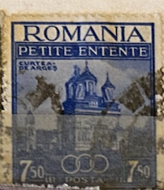
| SOURCE | TITLE| IMAGE MATCH | click to source page |
| lastdodo.com | 1937 Minor Entente Stamp catalogue - LastDodo | 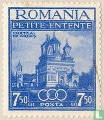 |
| eBay | ROMANIA OLD STAMPS 1937 - Little Entente - USED | eBay | 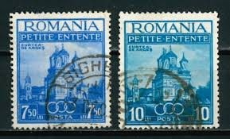 |
| eBay | Romania Historical Events Stamps for sale | eBay | 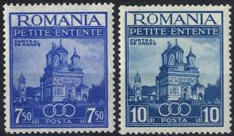 |
| Alamy | Czechoslovakia 1920 hi-res stock photography and images - Alamy | 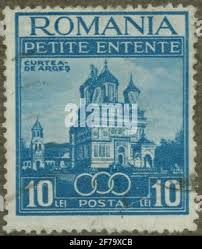 |
| eBay UK | Romania 467-468 MH | eBay UK | 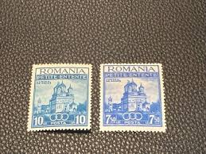 |
| Avion Thematics | Southern Nigeria 1903 KE7 Crown CA 1/2d overprinted SPECIMEN with gum and only about 750 produced SG 10s, stamps on specimens | 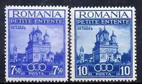 |
| eBay | ROMANIA # 467-8 Used CATHEDRAL CURTEA DE ARGES | eBay | 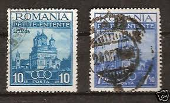 |
| buyhungarianstamps.com | 467-468 Romania - Little Entente (MLH) – Eastern Europe Postage Stamps | Hungaria Stamp Exchange | 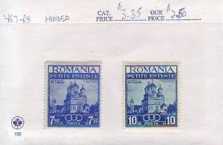 |
| HipStamp | Search "Romania 1948" / HipStamp | 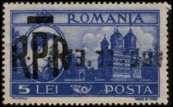 |
| eBay | Romania 1937, Mi#536-537, Sc#467-468, Little Entente, church, cathedral, MNH! | eBay | 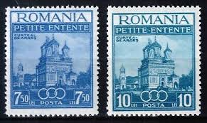 |
| eBay | Russia 1965 GHEORGHE GHEORGHIU-DEJ, PRES. ROMANIAN STATE COUNCIL SC 3074 MLH | eBay | 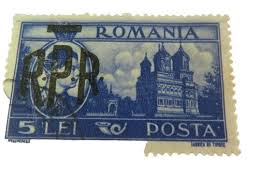 |
| eBay | Romania Stamps, Scott 467-468 Complete Set MNH | eBay | 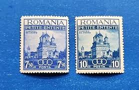 |
| eBay | ROMANIA SCOTT B28 MH VF - 1931 3L + 3L ULTRA SEMI-POSTAL ISSUE - BOY SCOUTS | eBay | 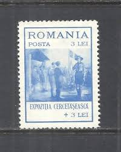 |
| eBay | ROMANIA 1945, KING CAROL I st., PUBLIC LIBRARY, BUCHAREST, Scott B260, MNH | eBay | 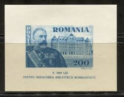 |
| eBay | Romania 1974 MNH Mi Block 114 Sc 2500 World Cup Soccer Championship, Munich ** | eBay | 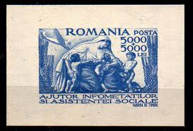 |
| HipStamp | Romania, Souvenir Sheet 1947 MNH **, Smallest in the World? | Europe - Romania, Stamp / HipStamp | 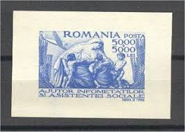 |
| eBay | Romania 1947 MNH Mi Block 36 Sc B348 Care for Needy / Nurse, childs, plane ** | eBay | 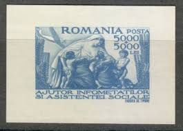 |
| eBay | ROMANIA 1936 522-523,536-537 ** MNH FLAWLESS 15€(09344 | eBay | 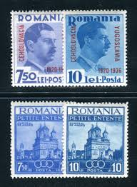 |
| Alamy | Lip letter hi-res stock photography and images - Page 3 - Alamy | 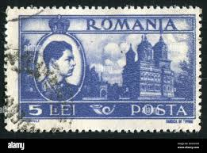 |
| Shutterstock | Karnal Haryana India -august 5th 2025-closeup Stock Photo 2670760211 | Shutterstock | 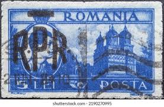 |
| marci-postale.com | Princess Roxanda at Curtea de Arges | 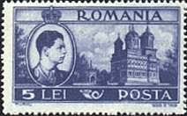 |
| eBay UK | G/VG (Good/Very Good) Used Romanian Stamps for sale | eBay UK | 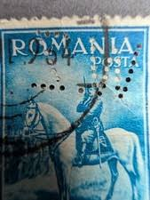 |
| eBay | Romania 1947 Social Aid/Mother Earth/Children Hungry Feeding Wheat Health MNH | eBay | 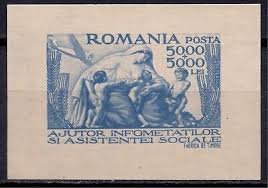 |
| Alamy | ROMANIA - CIRCA 1973: A stamp printed in Romania, shown Marasesti: Heroes masoleum, circa 1973 Stock Photo - Alamy | 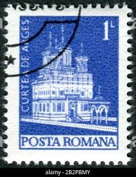 |
| Alamy | Vintage post stamp eagle hi-res stock photography and images - Page 5 - Alamy | 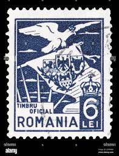 |
| Dreamstime.com | Stamp from Romania Shows Painting of Venice by N. Darascu Editorial Stock Photo - Image of cancelled, hobby: 99428353 | 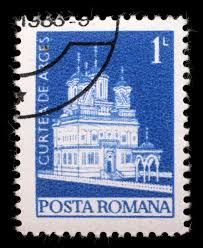 |
| PICRYL | 16 Stamps of romania 1973 Images: PICRYL - Public Domain Media Search Engine Public Domain Search | 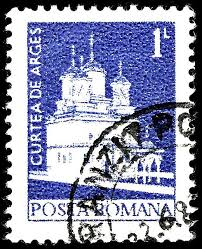 |
| eBay | Romania Royal Family King Carol I Centenary stamp 1939 RM | eBay | 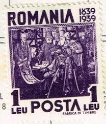 |
| Alamy | Postage stamp from Romania in the Definitives - Monuments series issued in 1973 Stock Photo - Alamy | 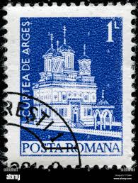 |
| Stamp Community Forum | Romania/Romana - Page 3 - Stamp Community Forum | 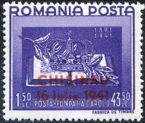 |
| HipStamp | Romania #O21 6l Eagle Carrying National Emblem | Europe - Romania, Officials Stamp / HipStamp | 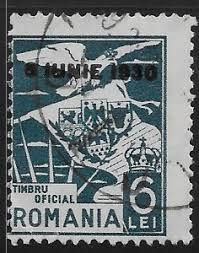 |
| pvoller.net | WW2 Postal History and More | 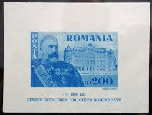 |
| Delcampe | Search in the "Romania > Officials" category | Delcampe | 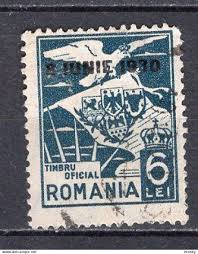 |
| romaniastamps.com | New Page | 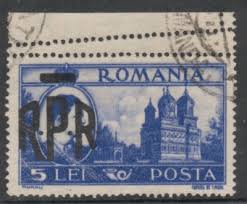 |
| Shutterstock | Romania Circa 1973 Cancelled Postage Stamp Stock Photo 1993229453 | Shutterstock | 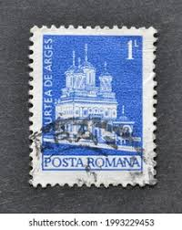 |
| Shutterstock | 13+ Thousand Office Romania Royalty-Free Images, Stock Photos & Pictures | Shutterstock | 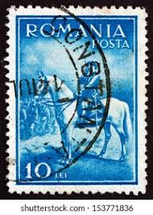 |
| Delcampe | Recherche dans la catégorie "Roumanie > Service" | Delcampe | 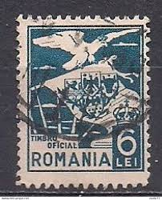 |
| Find Your Stamps Value | At Calafat 50b violet brown stamp price, value | 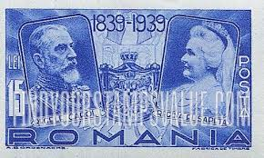 |
| buyhungarianstamps.com | B63-B65 Romania - Boy Scout Jamboree (MLH) – Eastern Europe Postage Stamps | Hungaria Stamp Exchange | 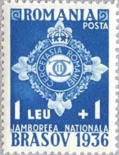 |
| Find Your Stamps Value | Value of queen elizabeth i2p stamps | 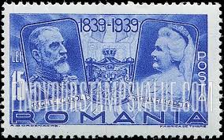 |
| allnumis.com | Iordache Gabriel Gallery of Stamps | 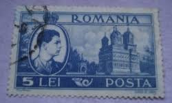 |
| Wikimedia.org | Category:Green stamps - Wikimedia Commons | 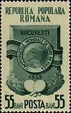 |
| buyhungarianstamps.com | Romania Prewar – Eastern Europe Postage Stamps | Hungaria Stamp Exchange | 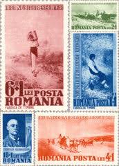 |
| eBay | 1968 Targoviste Tower,Corvin Castle/Dracula prison,Moldovita church,Romania,2714 | eBay | 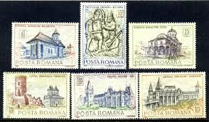 |
| stampsandstuff.net | Stamps from Romania 1940-1949 | 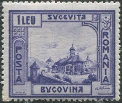 |
| Alamy | Curtea de arges monastery hi-res stock photography and images - Alamy | 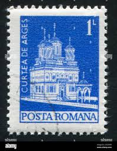 |
| pvoller.net | WW2 Postal History and More | 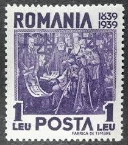 |
| Shutterstock | 2+ Thousand Stamps Monastery Royalty-Free Images, Stock Photos & Pictures | Shutterstock | 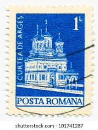 |
| eBay | Romania - 1906 - SC 184 - NH | eBay | 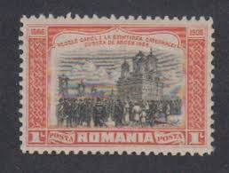 |
| eBay | 7 ROMANIA Postage Stamps MH Posta 1891-1941 & 1839-1939 Carol I Foundation | eBay | |
| eBay | ROMANIA - EXILE, 3 DIFFERENT STAMPS | eBay | |
| eBay | AOP) Romania cinderella | eBay | |
| All Numis | Stamps Catalog - List of stamps for 1930, Romania | |
| eBay | Romania 1929 Unused Set Union of Transylvania and Romania | eBay | |
| Burda Auction | Romania / Europe / Philately / Mail Auction 16 | Burda Auction (Filatelie Burda) | |
| GetArchive | 58 Carol I Of Romania On Stamps Image: PICRYL - Public Domain Media Search Engine Public Domain Search} | |
| eBay | ROMANIA MNH: Scott #678 12l 1948 Census MAP $$ | eBay | |
| Colnect | Stamp: Curtea de Argeș Episcopal Church (Romania(Definitives - Monuments) Mi:RO 3165,Sn:RO 2458,Yt:RO 2765,Sg:RO 4040,Rom:RO 837i 📮 | |
| HipStamp | Search "Romania Transylvania" / HipStamp | |
| eBay | Blue Used Romanian Stamps for sale | eBay |